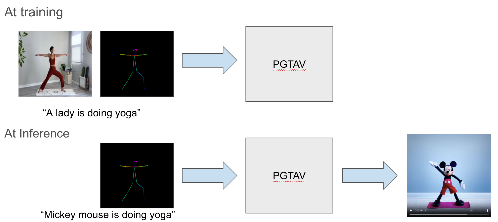
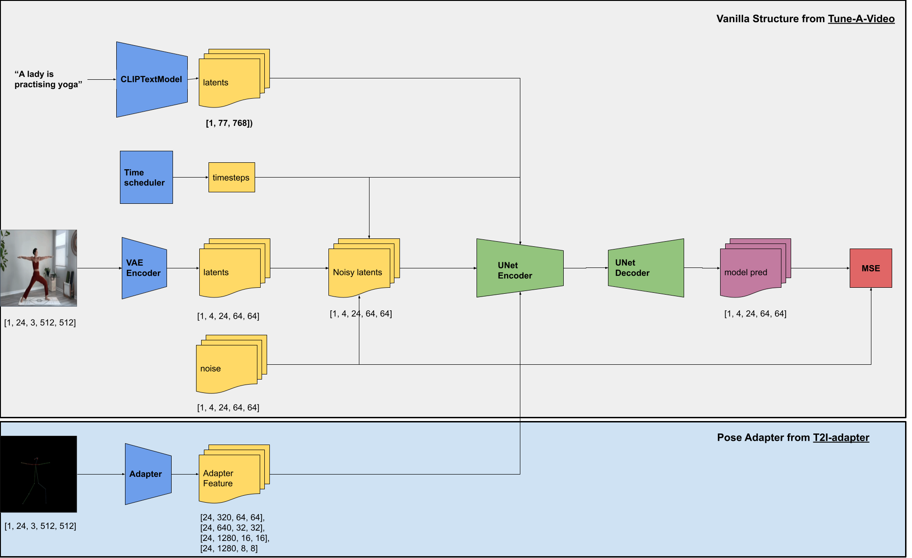
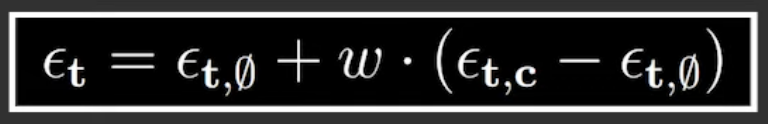
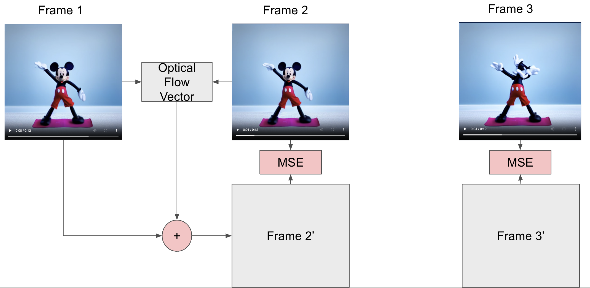
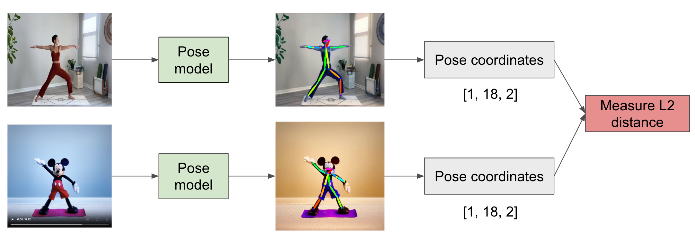

Abstract
We propose a novel framework that integrates human pose information as a guiding mechanism for the T2V synthesis process. Our model leverages pose estimation and motion priors to ensure anatomically plausible and contextually relevant human movements, bridging the gap between textual semantics and visual dynamics.
We also design two novel pose-specific evaluation metrics, Frame-to-Frame Pose Distance (FFPD) and Optical Flow Difference Score (OFDS), designed to quantitatively evaluate the alignment of generated poses with input text prompts and the realism of motion sequences, respectively. Extensive experiments on benchmark datasets demonstrate that our approach outperforms existing methods in both qualitative and quantitative evaluations, achieving superior control over human pose dynamics while maintaining high video quality. This work not only advances the state-of-the-art in T2V synthesis but also provides a robust framework for applications requiring precise human motion generation, such as virtual avatars, animation, and human-computer interaction.
Previous Challenges
Hypothesis
1. A one-shot diffusion model, designed to moderately overfit to a single video-text prompt pair during training, demonstrates the capability to generate contextually faithful video content when provided with a semantically similar text prompt during inference.
2. By maintaining consistent pose priors across both the training and inference phases, the model generates video content with significantly improved motion coherence and temporal consistency.
Fig: Training input: a video + pose feature + text prompt. Inference input: pose feature + text prompt
Dataset
Since the model is designed to over-fit to a single video-pose-text triplet, only a single data point is required
Experiments
Setup
Text prompts at Inference

Method
1. The workflow and the main builidng blocks
2. Classifier-Free Guidance with Pose Information
3. Optical Flow Difference Score
Occasionally, the generated video sequences exhibit artifacts such as the presence of additional limbs or heads in certain frames, indicating inconsistencies in the synthesis process. To quantitatively detect and measure such anomalies, we introduce a novel metric termed the Optical Flow Difference Score (OFDS). This metric computes the optical flow vectors between two consecutive frames \( f_1 \) and \( f_2 \), in the generated video. Using these vectors, we warp \( f_1 \) to produce a predicted frame \( f_{2}' \). The \( L_2 \) norm between \( f_2 \) and \( f_{2}' \) is then calculated to quantify the discrepancy. A low OFDS indicates smooth temporal transitions with minimal pixel-level inconsistencies, while a high OFDS signifies the presence of unexpected artifacts, such as unnatural pixel displacements or structural anomalies. This metric provides a robust mechanism for evaluating the temporal coherence and structural integrity of generated video sequences.
4. Frame-Frame Pose Distance (FFPD)
To quantitatively evaluate the alignment between generated videos and the original training video, we introduce a novel metric termed Frame-Frame Pose Difference (FFPD). Specifically, we employ an off-the-shelf pose estimation model to extract pose keypoints from each frame of both the generated video \( V_{gen} \) and the reference video \( V_{ref} \). Let \( P_{gen}^t \) and \( P_{ref}^t \) denote the sets of pose joint coordinates at frame \( t \) for \( V_{gen} \) and \( V_{ref} \), respectively. The FFPD is computed as the \( L_2 \) norm between corresponding pose keypoints across all frames:
FFPD = (1/T) ∑t=1T ‖Pgent − Preft‖2
where \(T \) represents the total number of frames. A high FFPD score indicates significant misalignment between the generated and reference videos, suggesting deviations in pose dynamics. Conversely, a low FFPD score reflects strong alignment, demonstrating that the generated video faithfully preserves the pose structure of the reference video. This metric provides a robust measure for assessing the structural consistency of generated videos in relation to the original training data.